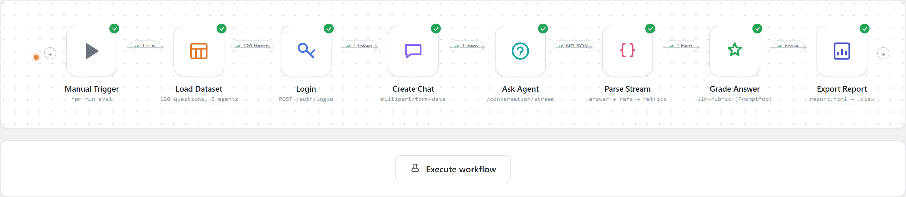

Open source · Promptfoo
Login, create a chat, ask a specialized agent, parse a streamed response, grade it semantically against a reference answer, and get a report — fully self-contained, zero real credentials required to try it.

Not a toy prompt-in, text-out eval — the full login → stream → grade lifecycle.
One dataset, six specialized agents — resolved per-row, per-run, or per-environment, with no code changes.
Consumes chunked NDJSON incrementally via getReader(), matching how production chat APIs actually stream.
An LLM rubric grades intent and key facts against a reference answer, not brittle string matching. 0–100 partial credit.
Switch dev → staging → production with one env var, zero file edits. Unknown environments fail fast with a clear error.
Results export back into the original .csv/.xlsx shape — ready to review by anyone, not just someone reading a JSON log.
Ships a fictional mock API and a 120-question dataset, so the whole pipeline runs end-to-end with no real backend.
Two terminals, one command each. No real credentials needed to try it.
# terminal 1 npm install cp .env.example .env # add your OPENAI_API_KEY, used only for grading npm run mock-server # terminal 2 npm run eval # runs the full benchmark against it npm run report # opens the interactive results viewer